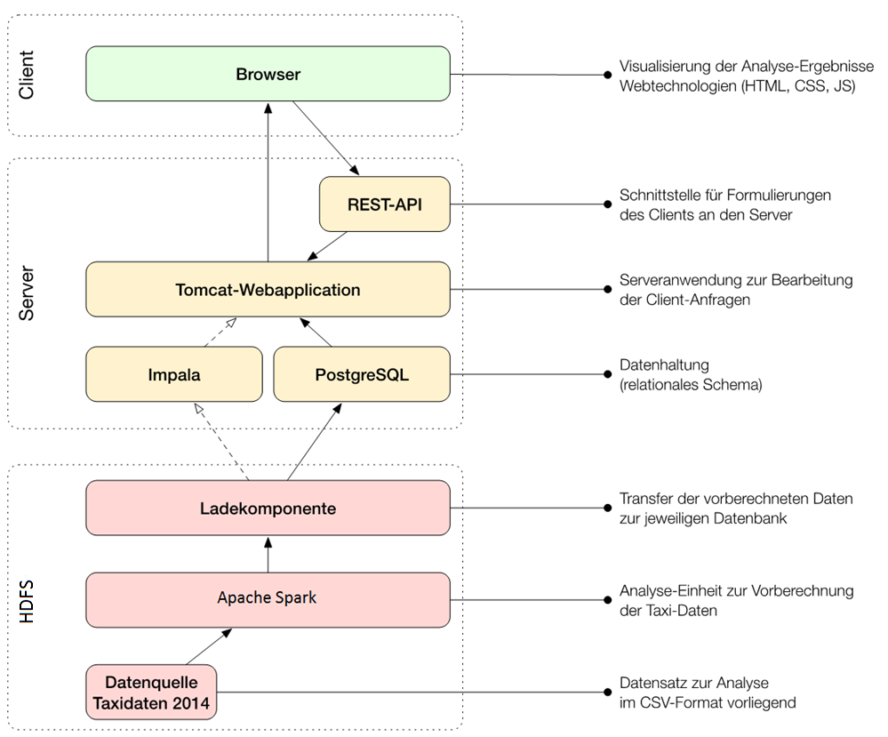

Magdablog
MAGDa - Management und Analyse Geotemporaler Daten
ETL Pipeline am Beispiel einer Verkehrsdatenanalyse in Dresden
Posted am 22.11.2016Für die Stadt Dresden liegt ein umfangreicher Datenbestand in Form von Floating Car Data (FCD) vor. Die Floating Car Data umfassen die Positionsdaten und Geschwindigkeitsinformationen aller Taxen in Dresden. Diese Daten sind sehr umfangreich, da mehr als 500 Taxen in Dresden unterwegs sind, die alle 5 Sekunde einen Datensatz senden. Floating Car Data können als Anreicherung für stationäre Sensordaten dienen, denn es gibt selten Sensoren in weniger besiedelten Stadtgebieten, wohingegen Taxen das komplette Stadtgebiet abdecken. Häufig werden Floating Car Data für die Berechnung von Reisezeiten verwendet. Die errechneten Reisezeiten können in Verkehrsmanagementsysteme zur Planung von Lichtsignalanlagen, neuen Straßen und Ampelschaltungen dienen. Darüber hinaus lassen sich diese Daten für Navigationssystem benutzen, die den Verkehrsfluss in der Stadt besser kennen und darauf basierend Umfahrungen vorschlagen können.
Dieser Artikel beschreibt die Etablierung einer ETL-Pipeline für einen Geodaten Use Case. ETL steht für Extract, Transform, Load. Die ETL-Pipeline extrahiert Taxidaten aus Dresden, transformiert die Daten zur Aggregation und Aufbereitung und lädt die Daten in eine verteilte SQL-Datenbank. Die analysierten Daten dienen als Ausgangspunkt für einen Webservice, der Verkehrsvisualisierung mittels Heatmaps zur Verfügung stellt.
Die Floating Car Data erlauben keinen Rückschluss auf den Gesamtverkehr, die Taxidaten definieren lediglich einen Ausschnitt aus dem Verkehrszustand. Mit Hilfe dieser hochwertigen Daten können grobe Verkehrsmuster erkannt und ausgewertet werden. In diesem Artikel geht es weiterhin um die Analyse und Visualisierung der Daten mit Heatmaps. Heatmaps sind eine sehr einfache Visualisierungsform, deren Werte auf einer zweidimensionalen Definitionsmenge als Farben repräsentiert werden.
Ein Beispiel einer Heatmap ist die Darstellung der Aufenthaltsdauer der Spieler auf dem Fußballfeld. Aus dieser Visualisierung können Trainer Schwachstellen in der Abwehr und häufige Angriffsversuche erkennen. Bezogen auf den FCD Anwendungsfall dient eine Heatmap zur Beantwortung verkehrstypischer Fragen. Passende Beispiele sind: "Wann komme ich wo schnell voran?" oder "Wann fahre ich am besten los, um Ort X möglichst optimal zu erreichen?"
Im Fall von Dresden werden, wie bereits erwähnt sekündlich, GPS- und Geschwindigkeitsdaten mitgeloggt. Eine Datenaggregation und Berechnung der Heatmaps geschieht durch eine ETL Pipeline. Die Ziele der Pipeline sind:
- Einlesen der Floating Car Data aus CSV-Dateien
- Transformation der Daten in ein anderes Datenformat
- Ausreißer erkennen und entfernen
- Zuordnung der Taxidaten auf Rasterausschnitte
- Aggregation der Daten pro Raster über die Zeit
- Speicherung der aggregierten Daten
Die komplette ETL Pipeline ist in Abbildung 1 zusammengefasst.
{kind=link}
Im Anschluss werden die Daten für die Heatmap Darstellung in der analytischen Datenbank Impala gespeichert. Ein nachgelagerter REST Service greift auf die Impala Datenbank zu und gibt die Daten an die Visualisierungskomponente zurück. Eine Visualisierung der Taxidaten für den 01.01.2014 um 0 Uhr ist ein Abbildung 2 aufgezeigt. Die Grafik verdeutlicht den Verkehr in der Silvesternacht, rote Bereiche weisen einen höheren Verkehr auf. Wohingegen grüne Bereiche nur sehr geringen Verkehr besitzen. Graue Rechtecke stehen für Regionen in Dresden ohne motorisierten Verkehr wie Parks oder Außenbereiche.
Silvester ist eine ganz besondere Nacht, was sich auch in der Heatmap-Visualisierung zeigt. Viele Taxifahrten gibt es demnach in Dresden Neustadt und in der Altstadt. Hier befinden sich viele Silvesterfeiern, das große Feuerwerk an der Elbe und viele Clubs. Viele Taxen sind beispielsweise auch an der Semperoper in Dresden, hier findet jährlich zu Silvester das berühmte Silvester-Gala-Dinner statt. All diese Charakteristika und Events sind in der Heatmap Darstellung erkennbar.
Abbildung 3 zeigt einen detaillierten Ausschnitt der kompletten Heatmap. Der Ausschnitt zeigt die Rasterung und Aggregationsbereiche in Dresden, wobei die Auflösung des Rasters angepasst werden kann. Eine Änderung der Auflösung kann man dafür benutzen, um die Innenstadt zu untergliedern oder eine gröbere Auflösung wählen, damit die Verkehrsmuster in den Randgebieten von Dresden besser erkannt werden können.
Eine andere Möglichkeit zur Analyse der Taxidaten ist die Erstellung von Hot Spots für Taxiendpunkte. Ein prominenter Vertreter von Hot-Spot-Analyse Algorithmen ist Getis-Ord Gi*. Dieser Algorithmus generiert Hot Spots und Cold Spots, die sich mit einer hohen Signifikanz herausbilden. Zeitliche und räumliche Nähe wird dafür mit einberechnet, um möglichst aussagekräftige Spots zu finden. Ein Hot Spots könnte beispielsweise der Bahnhofseingang zu einer bestimmten Zeit sein. Zur Bestimmung der Signifikanz liefert der Algorithmus einen Z-Wert und einen p-Wert. Diese Parameter beschreiben die Güte und Interpretationsmöglichkeit eines gefundenen Hot Spots beziehungsweise Cold Spots. Weitere Informationen zum Hot-Spot-Analyse Algorithmen gibt es im nächsten Blogeintrag.